The XXIV United States–Spain Council Forum brought together national and international leaders for two days of dialogue, diplomacy, and cultural exchange. Our team was honored to support the production and logistics behind this extraordinary gathering.
Held in San Antonio, Texas a city whose history and heritage are deeply intertwined with Spain’s, the Forum served as a vibrant platform to strengthen bilateral ties and explore shared values through conversations on issues critical to the future prosperity and shared growth of both nations. It was a celebration of partnership, dialogue, and cultural connection.
The Challenge
To deliver a seamless, high-level experience for dignitaries, diplomats, and business leaders from both sides of the Atlantic, every detail mattered. We had to consider the nuance of diplomatic protocol while meeting the standards of a world-class event. The forum required not only operational excellence, but also a deep understanding of ceremonial customs, stakeholder dynamics, and strategic storytelling through space, art, food and music.
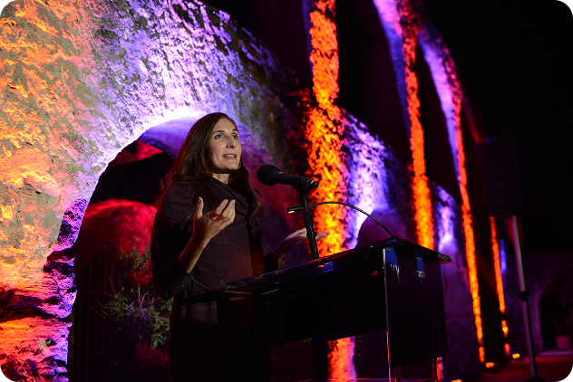
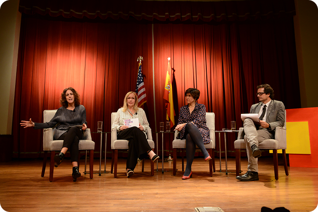
Our Approach
Over a six-month planning period, Unico served as the lead production and event management partner to the U.S.-Spain Council, providing end-to-end support across all facets of the forum. Our role spanned strategy, operations and creative direction – all grounded in a deep understanding of official customs and cross-cultural nuance.
Key services included:
- Project Management and Planning
- Creative Direction & Event Design
- Registration & Housing
- VIP & Delegate Services
- General Session Production
- Curated Companion Tours
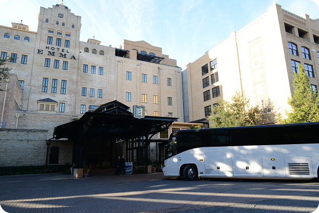
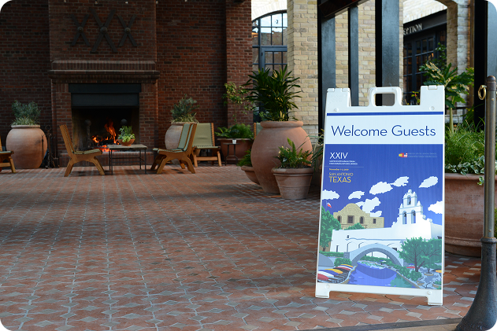
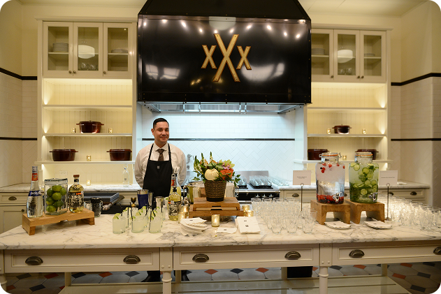
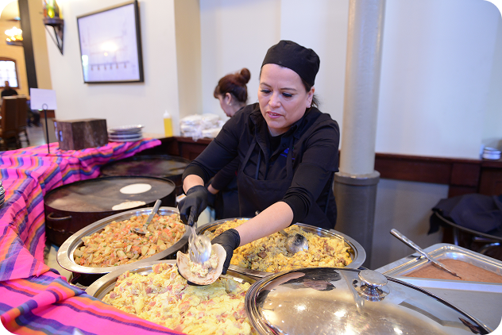
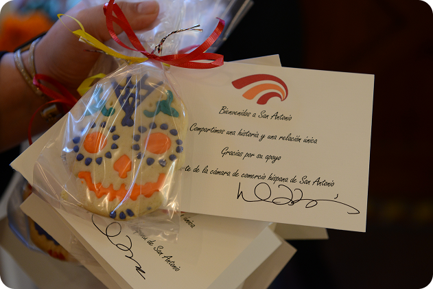
A Sense of Place with Purpose
At the heart of this forum was a deliberate choice to let the venues selected be the storyteller. From the moment guests arrived at Hotel Emma — a former 19th-century brewhouse transformed into one of the world’s most distinctive boutique hotels — they stepped into the layered history of San Antonio: one of innovation, reinvention and resilience.
The surrounding Pearl campus, where much of the programming unfolded, was more than a setting; it became a stage. The forum came alive through timely Día de los Muertos-inspired activations: traditional catrina performances, face painting, the unmistakable glow of marigolds, and culinary moments steeped in local heritage.
Each venue — from the historic Pearl Stables to the sacred grounds of Mission San José (a UNESCO World Heritage Site), to the Witte Museum along the San Antonio River — was chosen not simply for function, but for its ability to evoke meaning. That very river, once a lifeline to Spanish settlers, is where the city was first founded — making it a living thread that connected our modern gathering to the origins of San Antonio’s bicultural identity.
Together, the locations and curated experiences formed a narrative framework that elevated the forum beyond diplomacy — offering our international attendees a deeply personal connection to the city’s legacy and spirit.
.png)
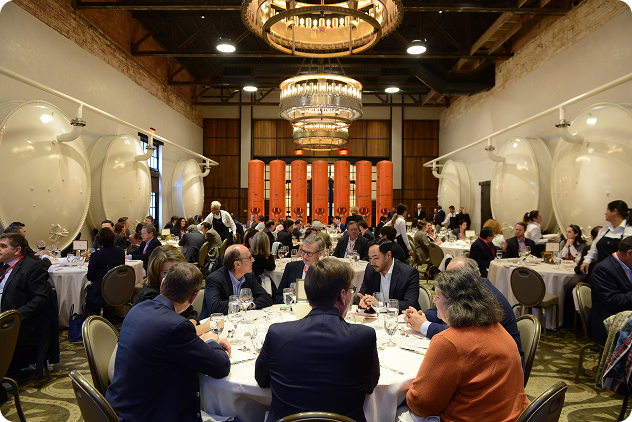
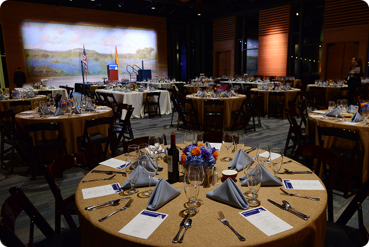
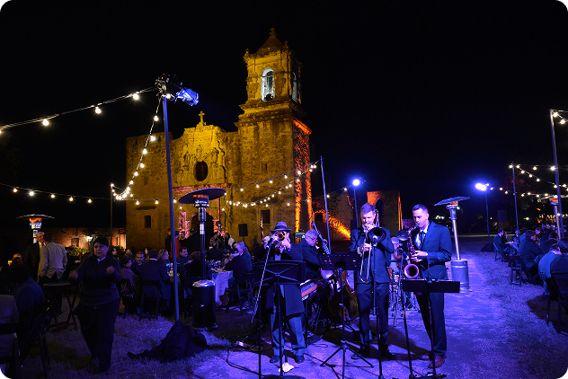
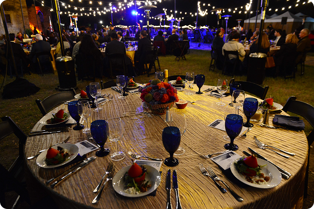
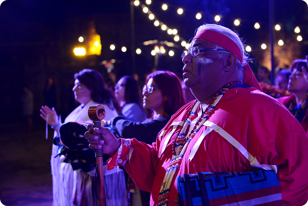